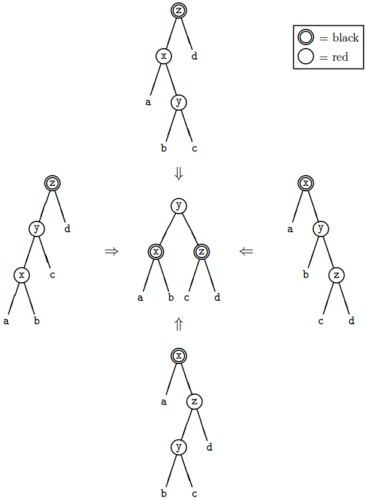

Введение
Времена изменились
высокоуровневые программы
многоядерность (с 2005 г.)
неизменяемые данные оказались удобнее
Некоторое время тому назад объёмы памяти не были столь значительны. Программистам приходилось явно
переиспользовать ячейки памяти для новых значений. Постепенно программисты привыкли и даже когда
объёмы памяти стали значительными, по-прежнему широко использовались переменные.
Кроме того, программы сейчас становятся весьма высокоуровневыми. Поэтому накладные расходы на
обслуживание неизменяемых данных оказываются незначительными в сравнении с операциями верхнего
уровня. На более низком уровне по-прежнему активно используются переменные.
[NF] В 2005 году "закончился бесплатный обед" (The Free Lunch Is Over A Fundamental
Turn Toward Concurrency in Software By Herb Sutter .) Повышение производительности теперь
достигается только за счёт распараллеливания.
[NF] "Удобство" неизменяемых данных - в первую очередь для программиста.
Во-первых, понять работу программы, в которой ничего не меняется, гораздо проще, чем работу
программы, в которой всё зависит от эфемерного текущего состояния программы.
Во-вторых, появляется возможность вести корректные рассуждения о работе многопоточных программ.
В-третьих, неизменяемые данные автоматически потокобезопасны.
[NF]
Аналогии
Математические выкладки
Построение рисунков добавлением элементов
Сборка модели из деталей конструктора
Математические выкладки в тетрадке. Мы записываем исходное выражение, потом несколько раз
переписываем его, заменяя отдельные части результатами вычислений. Иногда мы наносим дополнительные
пометки прямо на последнее выписанное выражение: сокращаем множители; взаимно уничтожаем слагаемые с
разными знаками; надписываем промежуточные результаты действий. Когда мы впоследствии переписываем
выражение "начисто", мы пользуемся сделанными пометками и интерпретируем их по ходу записи.
Теперь посмотрим, что происходит, если мы будем математические выкладки делать на школьной доске.
Если выражение достаточно развесистое, то его может быть проблематично переписывать целиком, так как
предыдущий шаг нам пришлось бы вначале стереть. В то же время, мы достаточно легко можем стирать
части выражения и заменять их результатами промежуточных вычислений.
Если мы рисуем чертеж, то мы в основном постепенно добавляем детали и стараемся, чтобы не
приходилось ничего стирать (что, впрочем, не всегда получается).
Сборка из конструктора вообще подразумевает, что сами детали остаются неизменными, а мы лишь меняем
их положение в пространстве.
Конструирование новых данных (пример 1, filter)
filter :: (a -> Bool) -> [a] -> [a]
filter _ [] = []
filter p (x:xs) | p x = x : filter p xs
| otherwise = filter p xs
def filter[A](p: A => Boolean)(list: List[A]): List[A] =
list match {
case Nil => Nil
case x :: xs if p(x) => x :: filter(p)(xs)
case _ :: xs => filter(p)(xs)
}
def filter[A](p: A => Boolean)(list: List[A]): List[A] =
list match {
...
case x :: xs =>
val flag = p(x)
val filteredTail = filter(p)(xs)
val result = if(flag) x :: filtered else filtered
result
...
}
Посмотрим, как выглядит реализация простой функции filter.
Во-первых, мы рассматриваем три шаблона на аргументы, с которыми имеем дело. В трёх разных случаях мы
имеем разные контексты именования.
[NF] Посмотрим на наиболее полный второй случай более внимательно. Мы разбираем исходную структуру на два компонента и даём
имена этим компонентам - x и xs.
Затем выполняем промежуточное вычисление p(x). Результат вычисления связывается с именем flag.
Следующее имя - filteredTail - будет именовать результат промежуточного вычисления filter для хвоста списка.
Далее мы выполняем промежуточное вычисление условного выражения, которое конструирует нам результирующую структуру данных.
Конструирование новых данных (пример 2 разбиение на строки)
lines :: String -> [String]
lines "" = []
lines s = let (l, s') = break (== '\n') s
in l : case s' of
[] -> []
(_:s'') -> lines s''
def lines(s: String): List[String] =
s match {
case "" => Nil
case _ =>
val (l, s1) = break(_ == '\n')(s)
val tail = s1 match {
case "" => Nil
case _ :: s2 => lines(s2)
}
l :: tail
}
Взглянем с аналогичной стороны на реализацию функции lines (которая производит разбиение по переводам
строк).
Исходная структура данных (список символов) в данном случае не требует разбора в локальном контексте.
Мы осуществляем промежуточные вычисления (break) и уже
результаты break разбираем на составляющие в локальном контексте и даём им имена. Далее мы всё-таки
разбираем s' на компоненты. Первый символ, перевода строки, мы игнорируем, а оставшуюся часть строки
обрабатываем рекурсивно.
Последним действием мы собираем структуру данных.
Красивые структуры данных (список)
data List a = Nil | Cons a List a
data [a] = [] | a : [a]
sealed trait List[+T]
case object Nil extends List[Nothing]
final case class Cons[+T](head: T, tail: List[T])
extends List[T]
sealed abstract class List[+A] extends AbstractSeq[A] with ..
case object Nil extends List[Nothing]
final case class ::[B](
private var hd: B,
private[scala] var tl: List[B]) extends List[B]
Односвязный список представляет собой либо пустой список, либо пару - голова/хвост.
[NF] В Хаскеле предусмотрен встроенный синтаксис для списков.
На Scala - аналогичная структура, только немного более громоздко.
По производительности - очень неплохая структура данных для типовых вариантов использования в
качестве неизменяемой структуры данных.
Посмотрим, что там под капотом...
[NF] О, ужас! Здесь же переменные!
Как же так оказалось, что в immutable структуре содержатся var? Это как раз следствие низкоуровневой
оптимизации. hd модифицируется в методе десериализации,
а tl модифицируется в ListBuffer'е при добавлении элементов в конец списка. Тем самым достигается
разумная производительность - O(1) при добавлении элементов. И O(1) при конвертации в список
(типичный способ использования списков - конструирование через CanBuildFrom и последующая
конвертация в список).
При конвертации в List используется copy-on-write механизм. То есть после конвертации выставляется
флаг. И если мы попытаемся добавить следующий элемент, то весь буфер будет автоматически
скопирован.
После конструирования (`toList`) структура становится неизменяемой.
Красно-чёрные деревья (модель)
data Color = R | B
data Tree elt = E | T Color (Tree elt) elt (Tree elt)
sealed trait Color
case object Red extends Color
case object Black extends Color
sealed trait Tree[+A]
case object E extends Tree[Nothing]
case class T[A](
color: Color,
left: Tree[A],
x: A,
right: Tree[A]
) extends Tree[A]
Цвет - либо R красный, либо B черный.
А дерево - либо пустой узел, либо узел, содержащий цвет, левое/правое поддерево и элемент.
То же самое на Scala (немного более многословно)
Красно-чёрные деревья (балансировка)

На рисунке представлены различные случаи нарушения инвариантов и способы исправления
нарушения. На всех деревьях x, y, z - рассматриваемые и исправляемые узлы, а a,b,c,d
нижележащие уже сбалансированные деревья.
Рисунок из статьи Криса Окасаки про красно-черные деревья (J. Functional Programming 9(4)
471–477, July 1999.
Cambridge University Press, 471 Red-Black Trees in a Functional Setting CHRIS OKASAKI)
Например, если x - вверху. До узлов a, b, c, d - один черный узел. Но y и z - красные.
После переписывания дерева оказывается, что остается один красный узел, но при этом до каждого из
поддеревьев все равно остаётся по одному чёрному узлу. И этот участок дерева стал сбалансированным.
Также можно смотреть на эти способы исправления инвариантов как на повороты/развороты дерева.
def balance[A: Ordering](n: T[A]): Tree[A] = n match {
case T(Black, T(Red, T(Red, a, x, b), y, c), z, d) => ???
case T(Black, T(Red, a, x, T(Red, b, y, c)), z, d) => ???
case T(Black, a, x, T(Red, T(Red, b, y, c), z, d)) => ???
case T(Black, a, x, T(Red, b, y, T(Red, c, z, d))) => ???
case t => t
}
В качестве шаблонов используются модели, представленные на предыдущем рисунке. Например,
последняя строчка соответствует случаю, когда x - черный, а y левее z.
Все эти шаблоны связывают одни и те же имена с разными узлами с таким расчетом,
чтобы конечный результат был представлен одним выражением.
def balance[A: Ordering](n: T[A]): Tree[A] = n match {
case ... => T(Red, T(Black, a, x, b), y, T(Black, c, z, d))
case ... => T(Red, T(Black, a, x, b), y, T(Black, c, z, d))
case ... => T(Red, T(Black, a, x, b), y, T(Black, c, z, d))
case ... => T(Red, T(Black, a, x, b), y, T(Black, c, z, d))
case t => t
}
Видно, что результирующая часть дерева имеет идентичную структуру во всех случаях исправления.
Вычисления как данные
lazy val
by ref
Task (fs2) (~ IO)
Stream (fs2)
Среди структур данных особое место занимают структуры, включающие отложенные вычисления. Эти
структуры являются неизменными в том смысле, что либо результат вычисления запоминается и больше не
изменяется, либо в точности те же вычисления могут быть выполнены повторно.
[NF] lazy val - простейший случай. Вычисление не выполняется, пока не потребуется результат. А
результат запоминается.
[NF] by ref - просто сохраняем ссылку на функцию и вызваем, когда требуется. Очень даже подходящий
способ для чистых функций без побочных эффектов.
[NF] Task - by ref на стероидах. Инкапсулирует отложенное вычисление и позволяет подклеивать
последующие шаги вычислений. Главным образом, позволяет сериализовать (упорядочить) шаги, обладающие
побочными эффектами, так как обычные вычисления могут быть легко переупорядочены. Гораздо лучше
Future с точки зрения предсказуемости результатов и эффективности использования ресурсов.
[NF] Stream - конечный автомат (трансдьюсер), содержащий вычисления, позволяющие перерабатывать
дискретный поток данных на входе в дискретный поток данных на выходе.
Представление вычислений в форме данных позволяет строить гибкие программы, существенно
отличающиеся от классического структурного программирования. Можно реализовать рекурсивные
алгоритмы, не ограниченные глубиной стека. Stream позволяет конструировать программы, обрабатывающие
big data при сохранении константного потребления памяти.
Корректное программирование
Программа делает, что от неё ожидают:
Не зависает, не "падает" с исключениями
Результаты правильные
Производительность соответствует ожиданиям
Как убедиться, что программа отвечает нашим ожиданиям?
Обычно трудно точно сказать, что значит корректная программа. Зачастую все заинтересованные лица
очень по-разному представляют, что должна делать программа. Здесь мы будем говорить о корректности с
точки зрения программиста. То есть, программист, анализируя программу может в значительной степени
корректно понять как она работает, и это понимание должно быть очень близко к тому, что происходит на
самом деле.
[NF] В частности, программа должна завершаться без ошибок.
[NF] Результаты программы должны проходить имеющиеся тесты
[NF] Программа должна потреблять разумное количество ресурсов (процессорного времени, памяти,
сетевого трафика, места на диске)
Корректное программирование (пример 1 merge sort JavaScript)
function merge(left, right, arr) {
var a = 0;
while (left.length && right.length) {
arr[a++] = (right[0] < left[0]) ? right.shift()
: left.shift();
}
while (left.length) {
arr[a++] = left.shift();
}
while (right.length) {
arr[a++] = right.shift();
}
}
function mergeSort(arr) {
var len = arr.length;
if (len === 1) { return; }
var mid = Math.floor(len / 2),
left = arr.slice(0, mid),
right = arr.slice(mid);
mergeSort(left);
mergeSort(right);
merge(left, right, arr);
}
var arr = [1, 5, 2, 7, 3, 9, 4, 6, 8];
mergeSort(arr); // arr will now: 1, 2, 3, 4, 5, 6, 7, 8, 9
Рассмотрим в качестве примера кусочек алгоритма mergeSort (Кусочек, потому что весь алгоритм на
слайд не помещается).
Реализация взята на сайте Розетта . ком. JavaScript - оказался несколько компактнее Java.
Задача функции заключается в том, чтобы слить две предварительно отсортированные коллекции
в одну.
Первое, на что хочется обратить внимание, это то, что здесь имеется 4 переменные
и все они в ходе исполнения программы меняются. Состояние - эфемерное.
Затем, меняются аргументы функции. Причем если один из аргументов является возвращаемым
значением, то два других страдают безвинно. Тем самым, функция обладает неожиданным для пользователя
побочным эффектом.
Далее. Из трех циклов всегда отрабатывают только два. К такому выводу можно прийти
только в результате внимательного моделирования того, как будут меняться переменные в ходе работы
программы. Перед последним циклом можно догадаться, что left уже пуст, но состояние right неизвестно.
Коллекции должны иметь быструю реализацию length даже в условиях постоянных изменений.
По-видимому, длина коллекции должна храниться.
А выходная коллекция обязательно должна поддерживать высокую скорость произвольного доступа,
несмотря на то, что заполняется она последовательно.
Может ли возникнуть исключение? По-видимому, да, если, например, размер возвращаемого массива
меньше суммы длин двух коллекций.
Корректное программирование (merge sort Haskell)
merge [] ys = ys
merge xs [] = xs
merge xs@(x:xt) ys@(y:yt) | x <= y = x : merge xt ys
| otherwise = y : merge xs yt
split (x:y:zs) = let (xs,ys) = split zs in (x:xs,y:ys)
split [x] = ([x],[])
split [] = ([],[])
mergeSort [] = []
mergeSort [x] = [x]
mergeSort xs = let (as,bs) = split xs
in merge (mergeSort as) (mergeSort bs)
Рассмотрим теперь тот же кусочек алгоритма, использующий неизменяемые структуры данных.
Во-первых, мы записываем два тривиальных случая, что если один из списков уже пустой, то
возвращаем другой, никакого слияния не требуется.
Далее, мы раскладываем поступившие данные в нашем пространстве имен с помощью сопоставления
с образцом. При этом хотя мы и ввели сразу 6 новых имен, однако никаких особенных требований к
коллекциям мы не предъявили - всего лишь доступ к первому элементу и представление
остатка коллекции.
Выполняем промежуточное вычисление, в данном случае, x<=y и merge для остатков списков.
После чего собираем результирующую структуру.
На что здесь можно обратить внимание? Во-первых, здесь имена не меняют своих значений
по ходу работы. То есть мы имеем 6 констант.
Во-вторых, в правильности результатов можно убедиться, посмотрев на возвращаемую структуру.
Первым элементом этой структуры всегда будет меньший элемент.
В-третьих, так как в ходе рекурсивного вызова мы всегда передаём функции merge аргументы,
один из которых укорочен, то можно прийти к выводу, что вычисление гарантированно завершатся
при любых входных параметрах и мы получим ответы.